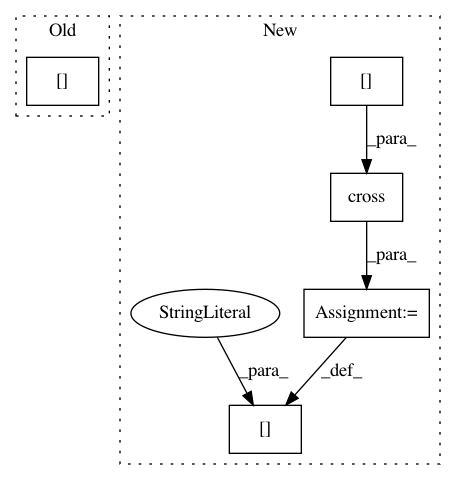

fb9275731bbc0bea7beb59e0d83c662537c27b8c,geomstats/special_orthogonal_group.py,,skew_matrix_from_vector,#Any#,34
Before Change
skew_mat = np.array([[0, -vec[2], vec[1]],
[vec[2], 0, -vec[0]],
[-vec[1], vec[0], 0]])
return skew_mat
After Change
vec = np.expand_dims(vec, axis=0)
skew_mat = np.zeros([vec.shape[0], vec.shape[1], vec.shape[1]])
skew_mat[:] = np.cross(np.array([[1., 0., 0.],
[0., 1., 0.],
[0., 0., 1.]]),
vec[:])
return skew_mat
def vector_from_skew_matrix(skew_mat):
In pattern: SUPERPATTERN
Frequency: 3
Non-data size: 5
Instances
Project Name: geomstats/geomstats
Commit Name: fb9275731bbc0bea7beb59e0d83c662537c27b8c
Time: 2018-01-31
Author: ninamio78@gmail.com
File Name: geomstats/special_orthogonal_group.py
Class Name:
Method Name: skew_matrix_from_vector
Project Name: geomstats/geomstats
Commit Name: 3cc9e1cfd039c5986c9ab4e1dfe3fa2d627a7d0a
Time: 2018-02-02
Author: ninamio78@gmail.com
File Name: geomstats/special_orthogonal_group.py
Class Name:
Method Name: skew_matrix_from_vector
Project Name: geomstats/geomstats
Commit Name: b0d0053b1f1738640fc99fba642c83af42d10b22
Time: 2018-02-02
Author: ninamio78@gmail.com
File Name: geomstats/special_orthogonal_group.py
Class Name:
Method Name: skew_matrix_from_vector